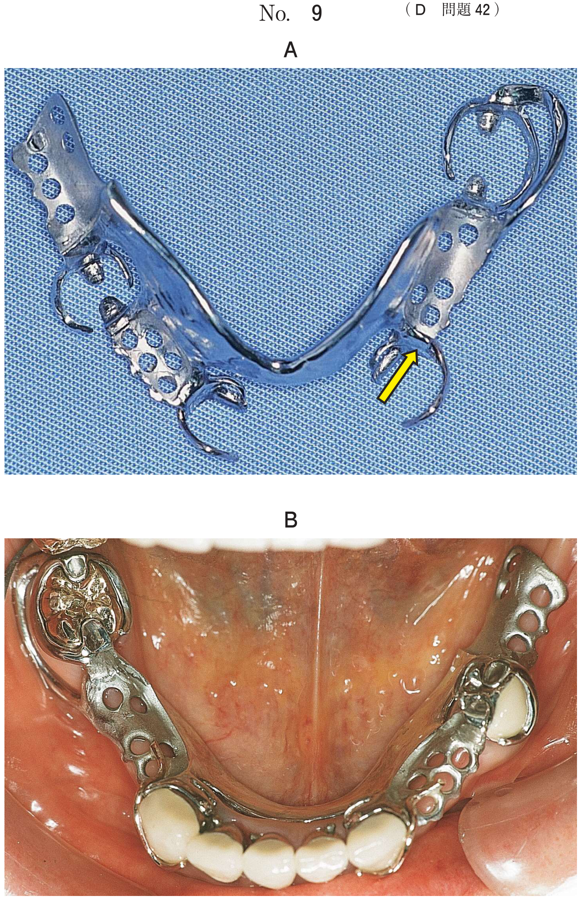
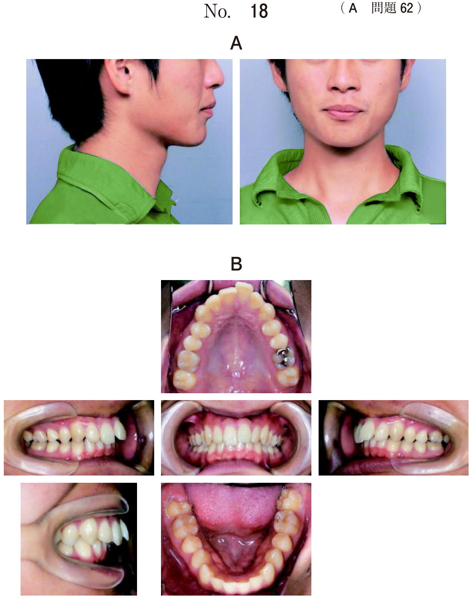

保隙装置
保隙とは
保隙装置とは、乳歯列期や混合歯列期に乳歯あるいは永久歯が早期に喪失した症例において、喪失歯が占有していた空隙を近遠心的あるいは垂直的に保持することを目的として使用される装置をいう。
保隙の適応症
- 後継永久歯の萌出空隙が隣在歯の傾斜・移動により狭められる可能性のある場合
- 対合歯が挺出する可能性のある場合
- 咀嚼や発音などの機能が障害される可能性のある場合
- 欠損部へ隣在歯が移動し、永久歯咬合に異常が予想される場合
保隙の非適応症
- 後継永久歯萌出のための空隙がすでに失われている（→動的咬合誘導を考慮）
- 不正咬合が存在する（→動的咬合誘導を考慮）
- 保隙装置が顎の成長、歯の萌出や生理的移動を障害する可能性がある
- 後継永久歯が早期に萌出すると予想される
- 患児や保護者の理解や協力が得られない
保隙装置の分類
| 分類 | 装置名 |
|---|---|
| 固定式 | クラウンループ（バンドループ） |
| ディスタルシュー | |
| リンガルアーチ | |
| Nanceのホールディングアーチ | |
| （その他） | |
| 可撤式 | 可撤保隙装置（床型保隙装置） |
- 咀嚼機能の回復が不可能
- 垂直的保隙が不可能
クラウンループ（バンドループ）
乳臼歯1歯のみの早期喪失例に適応。喪失部位の近遠心的空隙を確実に保持する。
| 項目 | 内容 |
|---|---|
| 適応 | 片側性乳臼歯1歯のみの早期喪失で、喪失部の後方に歯が存在 |
| 時期 | ⅡA〜ⅢB |
| 長所 | 近遠心的空隙を確実に保持 |
| 短所 | 片側1歯喪失例に限定される |
7歳の男児。上顎左側乳臼歯部の咀嚼時痛を主訴として来院した。初診時の口腔内写真（別冊No.16A）とエックス線画像（別冊No.16B）を別に示す。
治療方針で正しいのはどれか。1つ選べ。


b └E感染根管処置後、既製乳歯冠装着
c └E抜歯後、バンドループ装着
d └E抜歯後、クラウンループ装着
e └E抜歯後、ディスタルシュー装着
【解説】第二乳臼歯の保存不可能と判断し抜歯。第一大臼歯が萌出しているのでバンドループ（c○）を装着する。ディスタルシューは第一大臼歯萌出前に使用する（e×）。
ディスタルシュー
未萌出の第一大臼歯の保隙が行える唯一の装置。第一大臼歯萌出前に第二乳臼歯を早期喪失した場合に適応。
| 項目 | 内容 |
|---|---|
| 目的 | 萌出前の第一大臼歯の近心移動の防止 |
| 適応 | 第一大臼歯萌出前で片側の第二乳臼歯を早期喪失 |
| 時期 | ⅡA〜ⅡC |
| 長所 | 未萌出第一大臼歯の保隙が行える唯一の装置 |
| 短所 | 萌出した第一大臼歯は捻転を起こしやすい |
ディスタルシューの製作
金属板の先端は第一大臼歯近心歯冠最大豊隆部の位置に設定する。
ディスタルシューを製作中の作業用模型の写真（別冊No.7）を別に示す。
矢印で示す部位に相当するのはどれか。1つ選べ。

b 第二乳臼歯遠心根根尖部
c 第二乳臼歯遠心根中央部
d 第一大臼歯近心歯冠辺縁隆線
e 第一大臼歯近心歯冠最大豊隆部
【解説】ディスタルシューの金属板は第一大臼歯近心歯冠最大豊隆部（e○）の位置に設定する。この位置で第一大臼歯の近心移動を防止する。
ディスタルシュー→クラウンループへの変更
第一大臼歯萌出後はディスタルシューをクラウンループに変更する。
6歳の男児。定期検診のため来院した。1年前に下顎左側第二乳臼歯を齲蝕のため抜去し、保隙装置を装着した。診察の結果、クラウンループに変更することとした。保隙装置を変更する前の口腔内写真（別冊No.2）を別に示す。
保隙装置を変更する理由はどれか。2つ選べ。

b 咀嚼機能の回復
c 「6の捻転の防止
d 対合歯の挺出の防止
e 「6近心部歯肉の清掃性の向上
【解説】ディスタルシューからクラウンループへ変更する理由は、第一大臼歯の捻転の防止（c○）と清掃性の向上（e○）。ディスタルシューの短所として萌出した第一大臼歯は捻転を起こしやすい。
リンガルアーチ
2歯以上の乳臼歯を早期喪失した場合に適応。歯列弓周長の維持を目的とする。
| 項目 | 内容 |
|---|---|
| 適応 | 両側第一大臼歯にバンド適応可能で2歯以上の乳臼歯喪失、可撤保隙装置に不協力な患児 |
| 時期 | ⅢA〜ⅢC |
| 長所 | 歯列弓周長の確保が確実、弾線付加により歯の誘導が可能 |
| 短所 | バンド装着予定歯が萌出途上では適用できない |
Nanceのホールディングアーチ
リンガルアーチと同様であるが上顎のみに適用。前歯の被蓋関係が緊密な症例に使用可能。
可撤保隙装置
近遠心的・垂直的保隙および咀嚼機能の回復が可能な唯一の装置。
- 近遠心的＋垂直的保隙が可能（唯一）
- 咀嚼機能の回復が可能
- 審美性の回復、発音障害の防止
- 口腔習癖の予防効果
| 項目 | 内容 |
|---|---|
| 適応 | 両側性乳臼歯喪失、片側2歯以上喪失、乳前歯喪失 |
| 時期 | ⅡA〜ⅢB |
| 短所 | 床に隣接する歯に齲蝕を生じやすい、紛失・破損しやすい、低年齢児・不協力児には使用不可 |
5歳の男児。齲蝕治療を希望して来院した。検査の結果、すべての下顎乳臼歯を保存不可能と診断し、抜去することとした。初診時の口腔内写真（別冊No.26A）とエックス線画像（別冊No.26B）を別に示す。
抜去後に用いる装置で適切なのはどれか。1つ選べ。


b クラウンループ
c リンガルアーチ
d ディスタルシュー
e Nanceのホールディングアーチ
【解説】すべての下顎乳臼歯（両側性・複数歯）喪失のため可撤保隙装置（a○）が適切。咀嚼機能の回復も期待できる。クラウンループは1歯喪失例（b×）、リンガルアーチは第一大臼歯へのバンド装着が必要（c×）。
5歳の女児。上顎左側乳中切歯を齲蝕により抜去し、可撤保隙装置を装着することにした。
期待できるのはどれか。2つ選べ。

b 鼻呼吸の促進
c 口腔習癖の予防
d 唾液分泌の促進
e 後継歯の萌出促進
【解説】乳前歯喪失に対する可撤保隙装置では審美性の回復（a○）と口腔習癖の予防（c○）が期待できる。前歯部欠損による舌突出癖などの発生を防ぐ。
可撤保隙装置の製作
Hellmanの歯齢ⅡA期に用いる可撤保隙装置の製作過程で適切なのはどれか。2つ選べ。
b 咬合採得を行う。
c レジン歯を用いる。
d 乳犬歯に舌面レストを設定する。
e 頰側の辺縁を歯肉頰移行部に設定する。
【解説】可撤保隙装置の製作では咬合採得（b○）とレジン歯の使用（c○）が適切。筋形成は総義歯製作時に行う（a×）。
保隙装置の管理
保隙装置は発育旺盛な小児に装着するため、定期検診（3〜4か月に1回）が重要。
5歳の女児。定期健診時に保隙装置の適合を確認し修正を行った。修正前の口腔内写真（別冊No.11A）と修正後の装置の写真（別冊No.11B）を別に示す。
修正を行った理由はどれか。1つ選べ。


b 着脱性の向上
c 歯石沈着の予防
d 異所萌出の回避
e 成長抑制の防止
【解説】保隙装置が顎の成長を妨げないよう修正を行った。成長抑制の防止（e○）が目的。小児は成長期にあるため、装置が成長を阻害しないよう定期的な確認と修正が必要。
保隙装置の選択フローチャート
| 状況 | 適切な装置 |
|---|---|
| 片側乳臼歯1歯喪失（6萌出後） | クラウンループ／バンドループ |
| 第二乳臼歯喪失（6萌出前） | ディスタルシュー |
| 両側性・2歯以上喪失（6萌出後） | リンガルアーチ／可撤保隙装置 |
| 乳前歯喪失 | 可撤保隙装置 |
| 咀嚼機能回復が必要 | 可撤保隙装置 |
| 不協力児 | リンガルアーチ（固定式） |